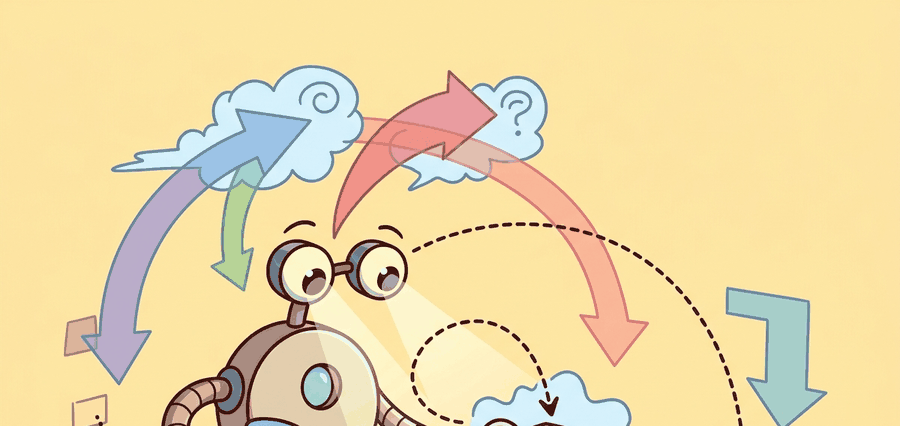

"Pipelines look boring until one missing state estimate breaks the whole warehouse."
A Builder's Planning Notebook

The pipeline stages introduced here assume familiarity with 6D pose estimation from section 27.2 and force-limited execution from section 8.4. The grasp proposal stage is treated in depth in section 43.1, where learned scoring replaces the analytic ranking used here. Contact-rich variants of the execute stage, where the robot must push or slide an object into a fixture, are covered in section 42.3.
Pick and place is the canonical manipulation pipeline because it exposes the full stack: perception, grasp generation, motion planning, force-limited execution, placement verification, and recovery.
This section breaks the classical pick-and-place stack into inspectable contracts: segmentation, 6D pose estimation, grasp proposal, approach trajectory, gripper closure, lift test, transfer, and place verification.
The payoff is practical. Once the stages are explicit, builders can swap MoveIt, cuRobo, Dex-Net, or a learned VLA policy into one stage without turning the full system into a debugging fog bank.
Most industrial pick-and-place failures are not mysterious. They are stage failures that were never isolated: bad pose proposals, invalid grasps, planner dead ends, premature gripper closure, or unverified placement.
Theory
Pick and place is a hybrid system with discrete stages and continuous control inside each stage. The important modeling habit is to attach explicit preconditions and postconditions to every stage so silent transitions are impossible.
A clean factorization treats grasp quality and trajectory feasibility separately, then combines them. That separation matters because a geometrically good grasp may still be unreachable under joint limits or collision constraints.
$$ g^\star = \arg\max_{g \in \mathcal{G}} Q_{\text{grasp}}(g)\,\mathbf{1}[\text{reachable}(g)]\,\mathbf{1}[\text{collision\_free}(g)],\qquad T = T_{\text{approach}} \circ T_{\text{lift}} \circ T_{\text{place}} $$
The pipeline observes the scene, proposes grasps, filters by reachability and collision, executes the pick with force-limited closure, verifies the lift, transports the object, and confirms final placement. A solid log stores failures at the stage boundary, not only at the episode boundary.
- Segment the scene and estimate object pose or graspable surfaces.
- Generate candidate grasps and rank them by quality, reachability, and downstream placement compatibility.
- Plan approach, closure, lift, and placement motions with explicit stage verifiers.
- If lift or placement fails, route to a bounded recovery such as regrasp, reobserve, or skip-bin.
Worked Example
# Filter grasp candidates by score and downstream feasibility.
grasps = [
{"id": "g1", "quality": 0.91, "reachable": True, "place_ok": False},
{"id": "g2", "quality": 0.84, "reachable": True, "place_ok": True},
{"id": "g3", "quality": 0.73, "reachable": False, "place_ok": True},
]
ranked = []
for g in grasps:
score = g["quality"] * float(g["reachable"]) * float(g["place_ok"])
ranked.append((g["id"], round(score, 2)))
ranked.sort(key=lambda row: row[1], reverse=True)
print(ranked)
print("selected", ranked[0][0])Expected output: The expected output selects the slightly weaker but fully feasible grasp. A robust pipeline prefers reachable and place-compatible grasps over visually impressive but dead-end candidates.
MoveIt 2 and cuMotion can own the arm-motion stages, while Dex-Net style scoring or learned grasp heads own the proposal stage. The pipeline remains legible only if stage outputs are serialized into one manifest.
Practical Recipe
- Define stage-level inputs and outputs before writing the first planner callback.
- Score grasps with downstream placement feasibility included, not as an afterthought.
- Verify the lift with object motion, gripper width, and force history together.
- After placement, measure object pose relative to the target bin or support surface, not only whether the gripper opened.
- Save one replay artifact with stage timestamps, selected grasp id, and recovery route.
Teams often celebrate grasp success and miss that their place stage is doing all the hard work with luck. If the chosen grasp makes placement infeasible, the upstream score is misleading by construction.
Sorting cells for e-commerce fulfillment frequently fail on the transition from lift to transport, where swinging payloads or poor suction seals only become visible once the box clears the tote.
Many teams implement lift verification as a single force threshold: if the measured load exceeds a few hundred grams, the pick is declared successful. This fails when a suction cup achieves partial seal, reporting adequate vacuum for one to two seconds before the object slips during transfer. A robust lift verifier combines gripper-width change (for parallel-jaw), vacuum decay rate (for suction), wrist-force delta above baseline, and object tracker re-detection at the lifted pose. Any one of those signals alone will miss a class of slippage events that only compound downstream.
In MoveIt 2, wire your multi-signal lift verifier as a ExecuteTaskSolution callback that reads from /gripper/joint_states (width), /vacuum_gripper/pressure, and /wrist_ft_sensor/wrench in a single synchronized subscriber using message_filters::TimeSynchronizer. Setting the sync queue depth to 5 and the time tolerance to 50 ms prevents the common failure where signals arrive slightly out of phase and the verifier sees a spurious drop. Without this, a partial-seal event sampled across two different ROS message timestamps can look like a clean hold, masking slippage that only appears during transfer.
Pick-and-place demos love the moment of lift. Production robots earn their salary during the far less cinematic moments of handoff, transport, and final pose verification.
Modern pipelines increasingly combine learned grasp proposals with optimization-based placement and GPU motion generation. The reliable systems are still the ones that keep stage boundaries explicit enough to audit.
Could you explain why your chosen grasp is compatible with both the pick and the place stage, or are you hoping the planner will rescue a bad upstream decision?
Stage decomposition itself has failure modes worth naming. The pipeline assumes that each stage can be evaluated and verified before handing off to the next, but two conditions break that assumption in practice. First, when objects are deformable or articulated (a bag of chips, a hinged lid), the pose estimate at the sense stage is not stable across the grasp and lift stages: the object changes shape under contact, so postconditions computed from the initial estimate become invalid mid-execution. Second, when placement targets are narrow relative to pose uncertainty, a grasp that is nominally place-compatible at proposal time may produce a collision at the place stage because accumulated errors across sense, approach, and closure push the delivered pose outside the feasible region. In both cases, the fix is not a better planner but tighter closed-loop feedback inside the execute stage rather than only at stage boundaries.
The subtle systems question is whether a grasp preserves future optionality while solving the immediate pickup. A bin-picking grasp that blocks the object's target orientation or occludes a second arm may be locally strong and globally poor.
For instruction, this section is a good place to contrast open-loop pipeline charts with evidence-backed pipeline manifests. The latter let students debug stage interactions rather than searching across the whole stack blindly.
| Tool or Library | Role in the Topic | Builder Advice |
|---|---|---|
| MoveIt 2 | Stage planning and execution | Use separate planning groups or task constructors for approach, lift, and place. |
| cuMotion via MoveIt plugin | High-throughput replanning | Useful when the scene changes quickly or the cell runs on NVIDIA hardware. |
| Dex-Net or GQ-CNN | Grasp scoring | Use it to rank candidates, but always filter through reachability and place constraints. |
Implement a two-object pick-and-place benchmark where one object is easier to grasp but impossible to place without collision. Show that your selector avoids it.
When a full cycle fails, label the first violated postcondition: pose estimate, chosen grasp, approach path, closure, lift, transfer, or place. The first broken stage is usually the most informative one.
Section References
Official documentation for planning, kinematics plugins, and execution interfaces in ROS 2 manipulation.
Official integration of GPU motion generation into MoveIt workflows.
Dex-Net ties grasp datasets, robust grasp metrics, and learned scoring into deployable pick pipelines.
A pick-and-place pipeline is trustworthy when every stage exposes a typed handoff and a verifier, not when the end-to-end demo looks smooth from far away.
Write a stage manifest for a tote-to-shelf pick-and-place task, including one failure branch for bad perception and one for failed lift verification. Explain what metric each branch should log.